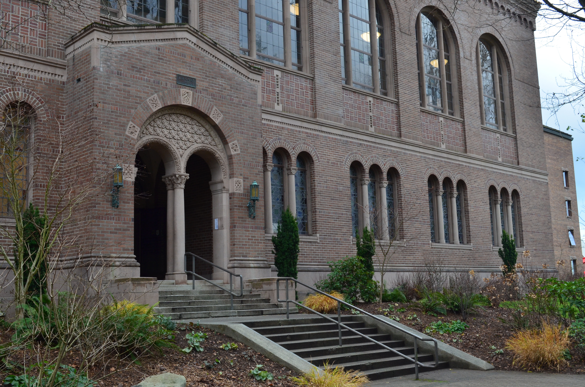
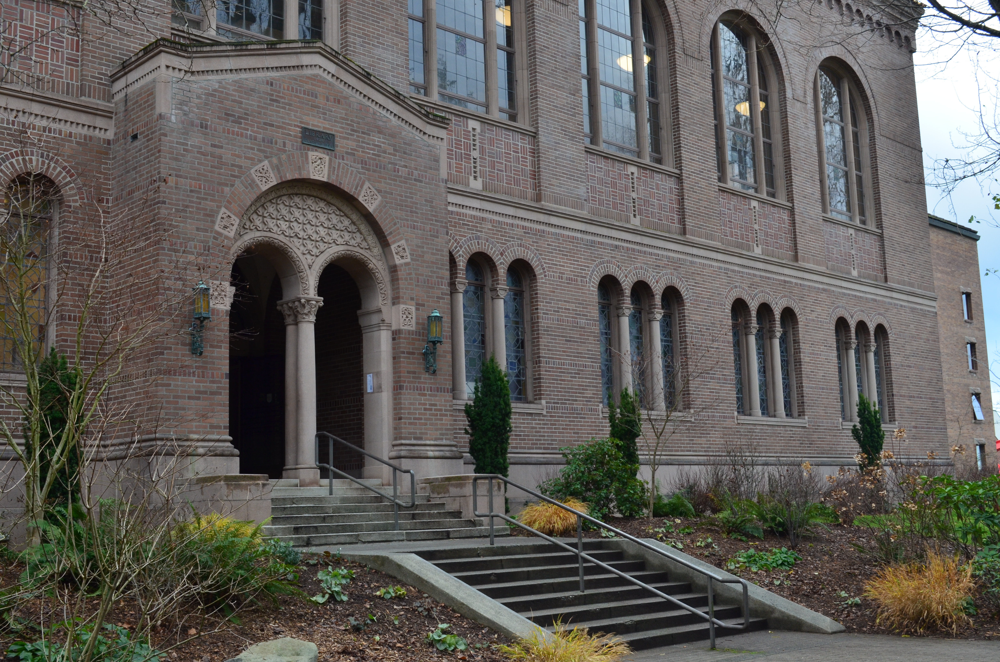

A New CS Graduate

Graduating during the tumultuous start of COVID-19 was nothing short of a rollercoaster. The four years of college, which typically include bustling campus life, in-person lectures, and face-to-face collaboration, suddenly transformed into a virtual experience. Navigating classes through screens, adapting to remote learning, and missing out on the traditional college social scene created an entirely new set of challenges. Yet, amidst the uncertainty, it also fostered resilience, adaptability, and a deeper appreciation for the moments of connection that persisted online. The journey was marked by countless late-night study sessions, Zoom study groups, and a relentless pursuit of knowledge despite the physical distance from peers and mentors.
 

Computer science, with its intricate concepts and demanding projects, proved to be both a rewarding and grueling discipline. The road was paved with long nights in the lab, debugging stubborn code, and tackling complex algorithms that often seemed insurmountable. Each project became a test of patience and perseverance, pushing students to their limits while also igniting a passion for problem-solving and innovation. The hours spent hunched over computers, fueled by coffee and determination, ultimately shaped not just a graduate, but a resilient individual ready to face the tech world head-on. The journey was challenging, but it laid a solid foundation for the exciting adventures that lie ahead in the ever-evolving field of computer science.